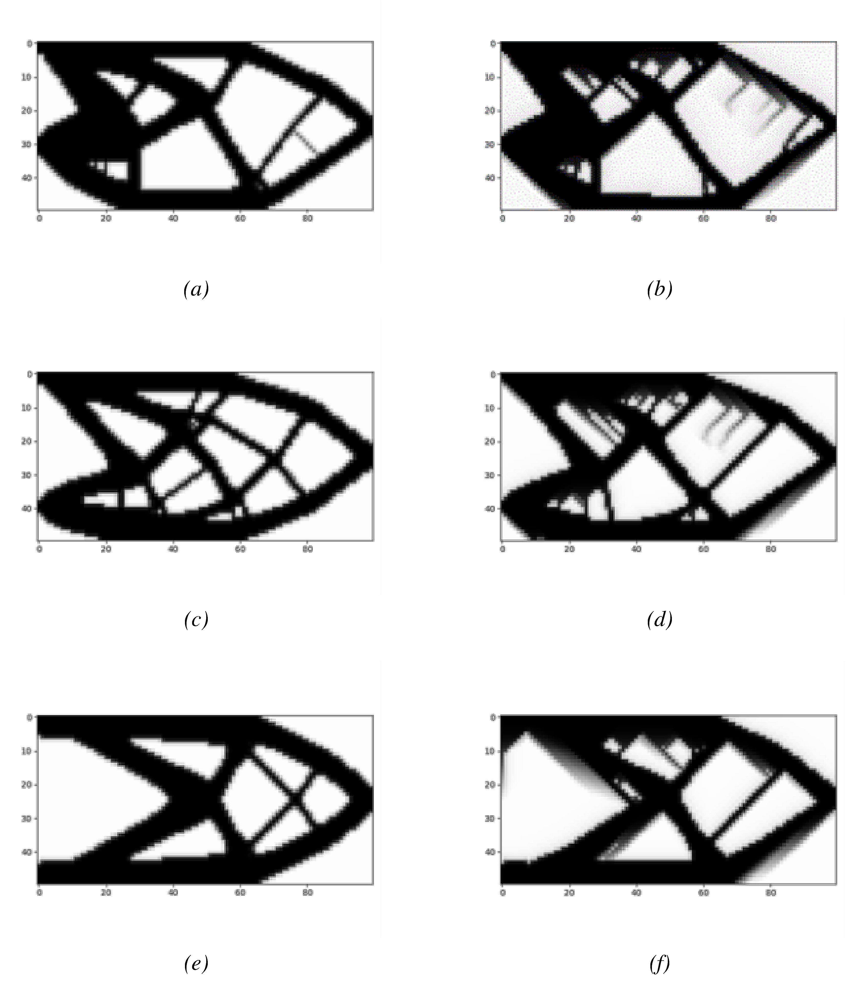
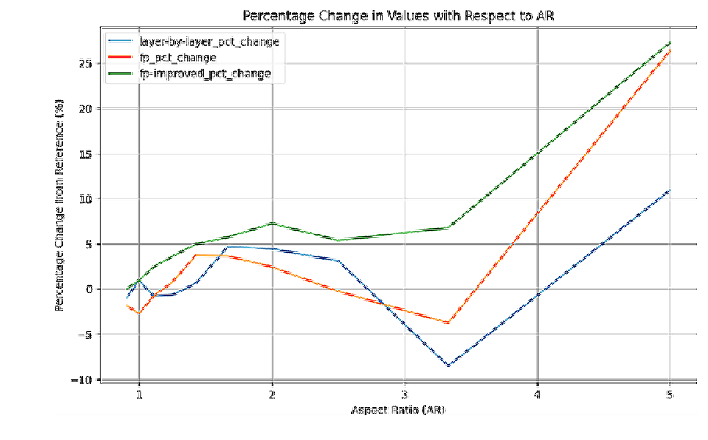

When you impose AM manufacturing constraints (overhang limits, minimum member size, build direction) on a topology optimisation, how much structural performance do you sacrifice compared to the unconstrained optimal? And which parameters drive that loss most?
| AR Range | Tradeoff | Note |
|---|---|---|
| AR < 2 | ≤ 5% | Filter-type independent |
| AR > 2.5 | Increases significantly | MBB more sensitive than cantilever |
| AR ≈ 3.5 | Outliers | Possible convergence issue |
| AR = 5 | 10–25% | Varies by benchmark |
A better optimum cannot be obtained by messing with boundaries or BC — the study confirms that AM constraints impose a bounded but unavoidable tradeoff.
